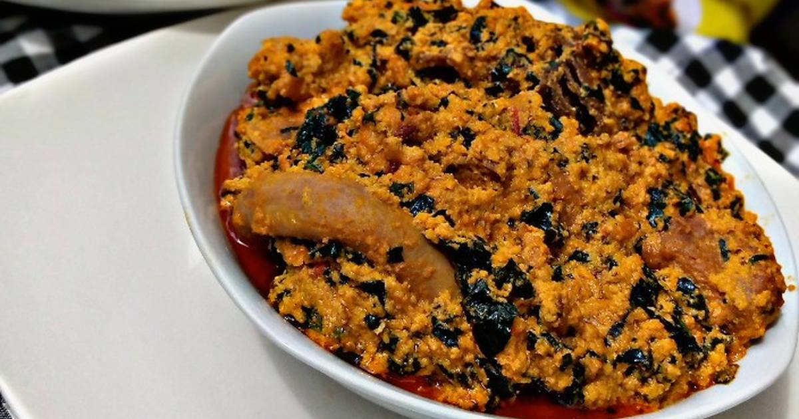

Egusi soup

The Nigerian egusi soup
This soup is native to West Africa (Nigeria). It is a great soup for those
who like their soup rich in protein. Ground Egusi seeds give this soup a
unique color and flavor. it is best served with pounded yam
Ingredients
- 1 cup blended onions (about 3- 5 and fresh chilies, to taste)
- 4 cups egusi (melon seeds, ground or milled)
- 1⁄2 – 1 cup palm oil
- 2 teaspoons fresh locust beans (Iru)
- Salt (to taste)
- Ground crayfish (to taste)
- 7– 8 cups stock
- Cooked Meat & fish (quantity and variety to personal preference)
- 2 cups cut pumpkin leaves(sliced)
- 3 tablespoons bitter leaf (washed)
Steps
- Prepare the egusi paste by blending the egusi seed and onions.
-
Heat the palm oil in a medium sized pot for a minute and add the locust
beans
- Slowly add the stock and set on low heat to simmer.
-
Scoop teaspoon size balls of the egusi paste into the pot. Be sure to
keep ball shape.
- Leave to simmer for 20 – 30 minutes so the balls cook through.
- Add the meat and fish and other bits which you’d like to use.
- Add sliced pumpkin leaves.
-
Stir and put a lid on the pot and allow cook for 7–10 minutes, till the
leaves wilt.
-
Add the bitter leaf. Leave the lid off while the cooking finishes for
another 5-10 minutes.
- Stir, check seasoning and adjust accordingly
Back to Home